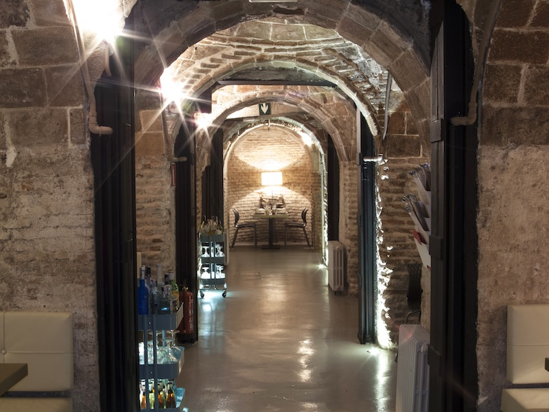

¿Qué habrá en la bodega?
Un misterio por descubrir
La bodega estaba fría y casi en penumbra. Paco bajó lentamente por las escaleras, sintiendo que cada paso lo acercaba a algo irreversible.
Detrás de unas cajas antiguas encontró una puerta oculta. Al abrirla, descubrió una pequeña cámara iluminada por una luz dorada.
En el centro descansaba un cofre abierto.
Alguien había llegado antes.
Y esa persona aún debía estar en la mansión.
